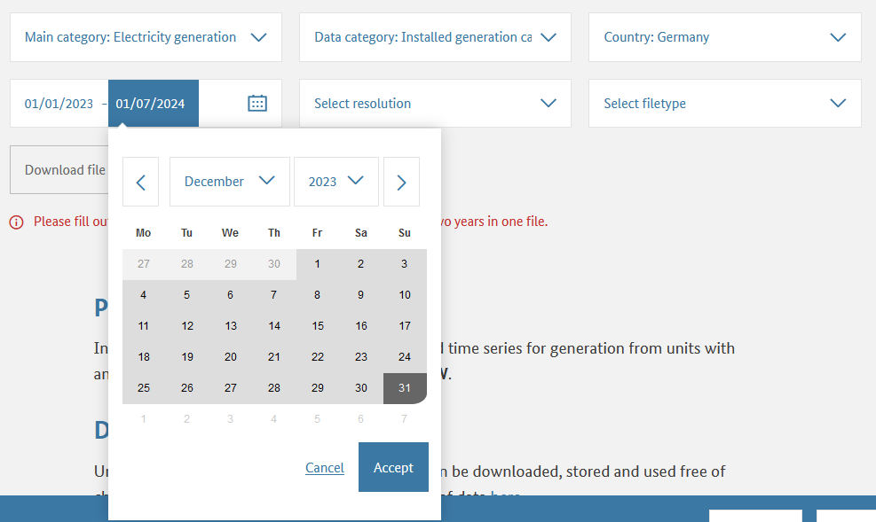
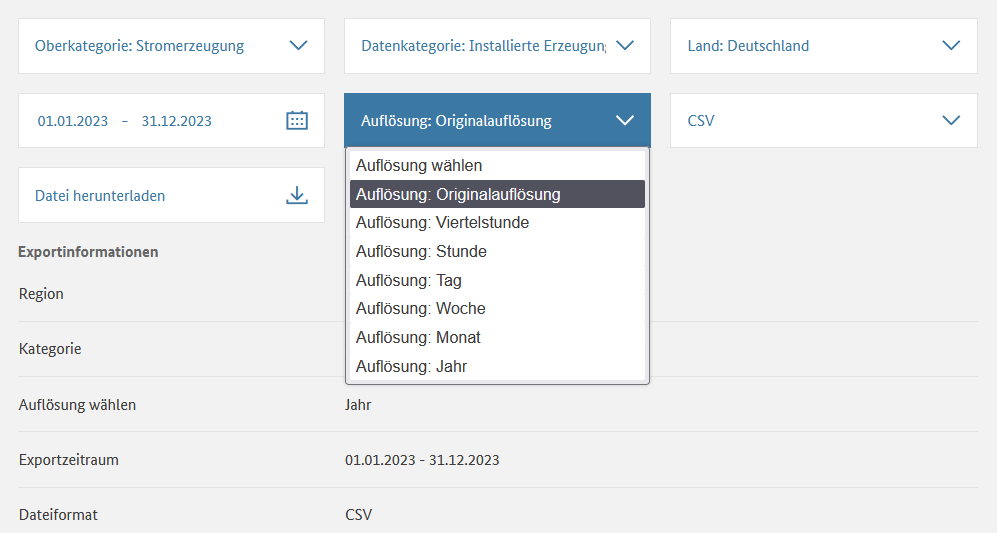
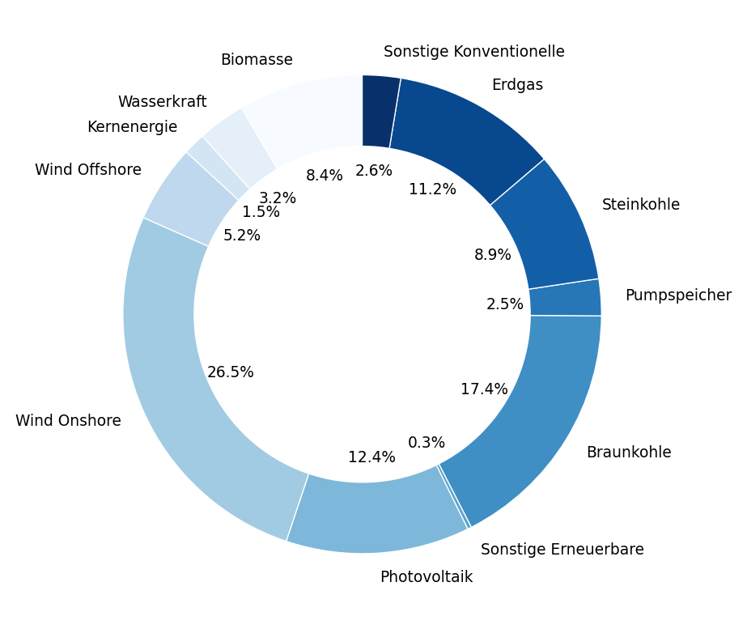
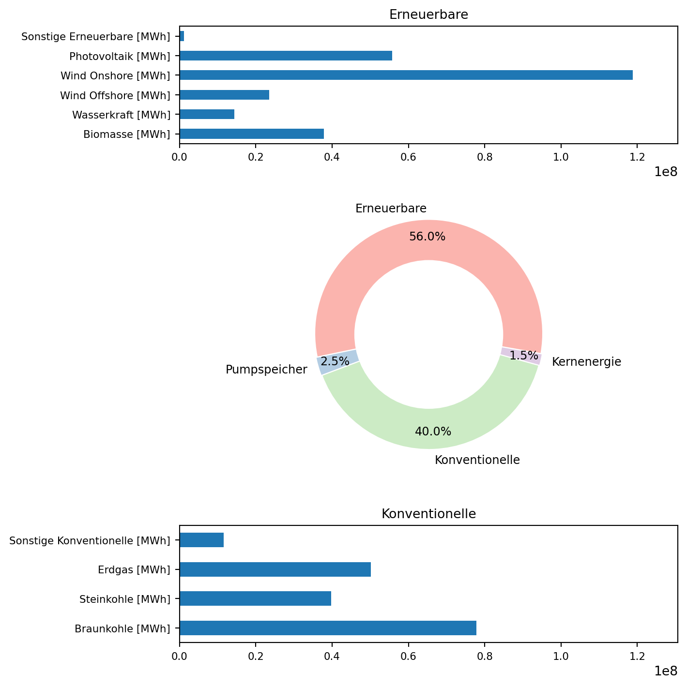

import pandas as pd
pd.set_option("display.precision", 2) # places after decimal for floats
import numpy as np
import matplotlib.pyplot as plt
installierte_leistung0 = pd.read_csv(filepath_or_buffer = \
"skript/01-daten/Installierte_Erzeugungsleistung_202301010000_202401010000_Jahr.csv", \
sep = ";", thousands = ".", decimal = ",", \
parse_dates = [0, 1], date_format = "%d.%m.%Y")
erzeugung0 = pd.read_csv(filepath_or_buffer = \
"skript/01-daten/Realisierte_Erzeugung_202301010000_202401010000_Viertelstunde.csv", \
sep = ";", thousands = ".", decimal = ",", \
parse_dates = [0, 1], date_format = "%d.%m.%Y %H:%M")
verbrauch0 = pd.read_csv(filepath_or_buffer = \
"skript/01-daten/Realisierter_Stromverbrauch_202301010000_202401010000_Viertelstunde.csv", \
sep = ";", thousands = ".", decimal = ",", \
parse_dates = [0, 1], date_format = "%d.%m.%Y %H:%M")Anwendungsbaustein Energiedatenanalyse

Bausteine Computergestützter Datenanalyse. Anwendungsbaustein Energiedatenanalyse von Lukas Arnold, Simone Arnold, Florian Bagemihl, Matthias Baitsch, Marc Fehr, Maik Poetzsch und Sebastian Seipel ist lizensiert unter CC BY 4.0. Das Werk ist abrufbar auf GitHub. Ausgenommen von der Lizenz sind alle Logos und anders gekennzeichneten Inhalte. 2024
Zitiervorschlag
Arnold, Lukas, Simone Arnold, Matthias Baitsch, Marc Fehr, Maik Poetzsch, und Sebastian Seipel. 2024. „Bausteine Computergestützter Datenanalyse. Anwendungsbaustein Energiedatenanalyse“. https://github.com/bausteine-der-datenanalyse/a-energiedatenanalyse.
BibTeX-Vorlage
@misc{BCD-Styleguide-2024,
title={Bausteine Computergestützter Datenanalyse. Anwendungsbaustein Energiedatenanalyse},
author={Arnold, Lukas and Arnold, Simone and Baitsch, Matthias and Fehr, Marc and Poetzsch, Maik and Seipel, Sebastian},
year={2024},
url={https://github.com/bausteine-der-datenanalyse/a-energiedatenanalyse}} 1 Voraussetzungen
Die Bearbeitungszeit dieses Bausteins beträgt circa Platzhalter. Für die Bearbeitung dieses Bausteins werden folgende Bausteine vorausgesetzt und die genannten Bibliotheken verwendet:
Werkzeugbaustein Python 3 Links, 3 verschiedene Quellen
Modul Pandas
Modul NumPy
Modul matplotlib.pyplot
Methodenbaustein Einlesen strukturierter Datensätze
Im Baustein werden Strommarktdaten für das Jahr 2023 verwendet. Daten für Deutschland werden von der Bundesnetzagentur bereitgestellt und sind unter https://www.smard.de/ abrufbar. Daten für Österreich werden von der Austrian Power Grid AG bereitgestellt und sind unter https://markttransparenz.apg.at/ abrufbar.
2 Lernziele
TO DO: ergänzen
In diesen Baustein lernen Sie Methoden und Werkzeuge für die Energiedatenanalyse kennen. Zu den vorgestellten Instrumenten gehören:
Berechnung und Visualisierung einer Jahresdauerlinie
Berechnung der Residuallast
Einspeisung glätten (Speicherbedarf für jede EE bestimmen, damit diese konstant einspeisen)
Simones Skript als Quelle benennen und zitieren - ist Lukas auch Autor?
(Arnold 2023)
3 Hintergrund
Elektrischer Strom wird in Kraftwerken erzeugt und über das Stromnetz zu den Stromverbrauchern transportiert. Stromerzeugung und -verbrauch müssen dabei immer ausgeglichen sein. Der Anteil wetterabhängiger erneuerbarer Einspeisung steigt, Strom kann bislang aber nicht (kostengünstig) großtechnisch gespeichert werden. 2023 speisten die Pumpspeicherkraftwerke in Deutschland 11,1 TWh Strom ein, was 2,4 Prozent des deutschen Stromverbrauchs von 458,3 TWh entsprach (Fraunhofer Institut für Solare Energiesysteme ISE o. J.). Die Kraftwerkseinsatzplanung und Speicherauslegung auf Basis von Erzeugungs- und Verbrauchsdaten ist deshalb ein relevantes Anwendungsfeld für die Datenanalyse.
Die Bundesnetzagentur veröffentlicht auf https://www.smard.de/ unter anderem Daten zu Stromerzeugung, -verbrauch und Großhandelspreisen. (Hinweis: Kraftwerksdaten liegen für Erzeugungseinheiten mit einer installierten Erzeugungsleistung von mindestens 100 MW vor.)
idealerweise werden die Konzepte anhand der Daten der FH gezeigt, und mit den SMARD-Daten beübt
4 Daten einlesen
Die Strommarktdaten der Bundesnetzagentur müssen manuell auf https://www.smard.de/ heruntergeladen werden. In diesem Skript werden Daten für das Jahr 2023 benutzt.
| Daten | Dateiname |
|---|---|
| Installierte Erzeugungsleistung 2023 | Installierte_Erzeugungsleistung_202301010000_202401010000_Jahr.csv |
| Realisierte Stromerzeugung 2023 | Realisierte_Erzeugung_202301010000_202401010000_Viertelstunde.csv |
| Realisierter Stromverbrauch 2023 | Realisierter_Stromverbrauch_202301010000_202401010000_Viertelstunde.csv |
Warning 1: SMARD Daten herunterladen
Beim der Auswahl des Zeitraums auf Akzeptieren klicken.
Daten zur installierten Leistung in Originalauflösung (Jahresbasis) auswählen.


Das Datumsformat der Dateien ist abhängig von der auf der Internetseite eingestellten Sprache (Deutsch/English).
Die semikolonseparierten Dateien werden als DataFrame mit dem Python Modul Pandas eingelesen, das mit dem Kürzel pd importiert wird. Dazu wird die Funktion pd.read_csv() verwendet. Dabei werden:
das Zeichen-, Tausender- und Dezimaltrennzeichen spezifiziert.
sep = ";", thousands = ".", decimal = ","die Spalten mit Datums- und Zeitangaben sowie das Datumsformat bestimmt.
parse_dates = [0, 1], date_format = "%d.%m.%Y %H:%M"
Sehen Sie sich die Zeichenkette zur Spezifikation des Datumsformats an: "%d.%m.%Y %H:%M". Können Sie anhand der Dokumentation bestimmen, welches Format die Datumsangaben in der Datei haben? Welches Format hat der 14. April 2023 um Viertel nach zwei nachmittags?
Aufgabe eher für m-Baustein Einlesen strukturierter Datensätze geeignet. Als Folgeaufgabe könnte man mit Hilfe der Dokumentation die englische Datei ‘Actual_generation_202301010000_202401010000_Quarterhour’ einlesen lassen.
english version
english version
import pandas as pd
erzeugung0_en = pd.read_csv(filepath_or_buffer = \
"skript/01-daten/english/Actual_generation_202301010000_202401010000_Quarterhour.csv", \
sep = ";", thousands = ",", decimal = ".", \
parse_dates = [0, 1], date_format = "%b %d, %Y %I:%M %p") # leading zero is optional for formats %d, %m, %H, %I, %M, %S, %j, %U, %W, and %V
pd.concat([erzeugung0_en.head(2), erzeugung0_en.tail(2)])| Start date | End date | Biomass [MWh] Original resolutions | Hydropower [MWh] Original resolutions | Wind offshore [MWh] Original resolutions | Wind onshore [MWh] Original resolutions | Photovoltaics [MWh] Original resolutions | Other renewable [MWh] Original resolutions | Nuclear [MWh] Original resolutions | Lignite [MWh] Original resolutions | Hard coal [MWh] Original resolutions | Fossil gas [MWh] Original resolutions | Hydro pumped storage [MWh] Original resolutions | Other conventional [MWh] Original resolutions | |
|---|---|---|---|---|---|---|---|---|---|---|---|---|---|---|
| 0 | 2023-01-01 00:00:00 | 2023-01-01 00:15:00 | 1094.25 | 320.0 | 684.25 | 7145.75 | 0.50 | 32.25 | 615.25 | 962.75 | 517.00 | 429.75 | 13.50 | 307.25 |
| 1 | 2023-01-01 00:15:00 | 2023-01-01 00:30:00 | 1091.25 | 317.5 | 743.50 | 7158.25 | 0.25 | 32.25 | 614.75 | 963.25 | 518.00 | 429.50 | 9.75 | 307.25 |
| 35038 | 2023-12-31 23:30:00 | 2023-12-31 23:45:00 | 1053.25 | 412.5 | 1479.25 | 7544.25 | 0.50 | 24.00 | 0.00 | 845.25 | 444.50 | 683.00 | 122.75 | 348.50 |
| 35039 | 2023-12-31 23:45:00 | 2024-01-01 00:00:00 | 1051.50 | 404.0 | 1469.00 | 7480.50 | 0.50 | 24.00 | 0.00 | 840.75 | 442.25 | 679.00 | 58.25 | 348.00 |
Tip 1: Solution date format
| Directive | Meaning |
|---|---|
| %b | Month as locale’s abbreviated name (Jan, Feb, …) with delimiter ” ” |
| %d | Day with delimiter “, ” |
| %Y | Year as four digit decimal with delimiter ” ” |
| %I: | Hour as two digit decimal (leading zero is optional) with delimiter “:” |
| %M | Minute as two digit decimal with delimiter ” ” |
| %p | AM or PM |
Solution: Apr 14, 2023 2:00 PM
Tip 2: Lösung Datumsformat
| Kürzel | Bedeutung |
|---|---|
| %d. | Tag als zweistellige Ganzzahl mit Trennzeichen “.” |
| %m. | Monat (ggf. mit führender Null) mit Trennzeichen “.” |
| %Y | Jahr als vierstellige Ganzzahl mit Trennzeichen ” ” |
| %H: | Stunde als zweistellige Ganzzahl mit Trennzeichen “:” |
| %M | Minute als zweistellige Ganzzahl |
Lösung: 14.04.2023 14:15
5 Daten organisieren
Vor der Datenanalyse sollte überprüft werden, ob die Daten korrekt eingelesen wurden. Dies bedeutet zum einen, zu kontrollieren, ob der Datentyp aller Spalten richtig erkannt wurde. Ob die Spaltentypen einer Datei korrekt eingelesen wurden, können Sie in Python mit dem Befehl df.dtypes überprüfen. Hier der Output des Befehls für den DataFrame erzeugung0.
print(f"Spalten:\n{erzeugung0.dtypes}")Spalten:
Datum von datetime64[ns]
Datum bis datetime64[ns]
Biomasse [MWh] Originalauflösungen float64
Wasserkraft [MWh] Originalauflösungen float64
Wind Offshore [MWh] Originalauflösungen float64
Wind Onshore [MWh] Originalauflösungen float64
Photovoltaik [MWh] Originalauflösungen float64
Sonstige Erneuerbare [MWh] Originalauflösungen float64
Kernenergie [MWh] Originalauflösungen float64
Braunkohle [MWh] Originalauflösungen float64
Steinkohle [MWh] Originalauflösungen float64
Erdgas [MWh] Originalauflösungen float64
Pumpspeicher [MWh] Originalauflösungen float64
Sonstige Konventionelle [MWh] Originalauflösungen float64
dtype: object
Viele der Spaltennamen enthalten die Zeichenkette ” Originalauflösungen”, die der Übersichtlichkeit wegen entfernt werden kann (führendes Leerzeichen beachten). Auf diese Weise könnte auch die Einheitenangabe [MWh] entfernt werden, falls diese als störend empfunden wird.
# Zeichenkette " Originalauflösungen" entfernen
installierte_leistung0.columns = installierte_leistung0.columns.str.replace(pat = " Originalauflösungen", repl = "")
erzeugung0.columns = erzeugung0.columns.str.replace(pat = " Originalauflösungen", repl = "")
print(f"Spalten:\n{erzeugung0.dtypes}")
verbrauch0.columns = verbrauch0.columns.str.replace(pat = " Originalauflösungen", repl = "")Spalten:
Datum von datetime64[ns]
Datum bis datetime64[ns]
Biomasse [MWh] float64
Wasserkraft [MWh] float64
Wind Offshore [MWh] float64
Wind Onshore [MWh] float64
Photovoltaik [MWh] float64
Sonstige Erneuerbare [MWh] float64
Kernenergie [MWh] float64
Braunkohle [MWh] float64
Steinkohle [MWh] float64
Erdgas [MWh] float64
Pumpspeicher [MWh] float64
Sonstige Konventionelle [MWh] float64
dtype: object
Zum anderen sollten die eingelesenen Daten betrachtet werden, um Fehler etwa bei der Umwandlung von Dezimal- und Tausendertrennzeichen, des Datumsformats oder eine unerwartete Anzahl fehlender Werte und sonstige Auffälligkeiten zu identifizieren. Dazu sollten nicht nur die ersten Zeilen des Datensatzes, sondern auch Ausschnitte aus der Mitte und dem Ende kontrolliert werden. Dafür ist der Befehl pd.concat([a, b, c]) nützlich, dem eine Liste von Indexbereichen übergeben werden kann (siehe zweiter und dritter Reiter im folgenden Panel).
# der DataFrame installierte_leistung0 hat nur 1 Zeile
installierte_leistung0| Datum von | Datum bis | Biomasse [MW] | Wasserkraft [MW] | Wind Offshore [MW] | Wind Onshore [MW] | Photovoltaik [MW] | Sonstige Erneuerbare [MW] | Kernenergie [MW] | Braunkohle [MW] | Steinkohle [MW] | Erdgas [MW] | Pumpspeicher [MW] | Sonstige Konventionelle [MW] | |
|---|---|---|---|---|---|---|---|---|---|---|---|---|---|---|
| 0 | 2023-01-01 | 2024-01-01 | 8467.0 | 5049.0 | 8129.0 | 57590.0 | 63066.0 | 440.0 | 4056.0 | 17692.0 | 18127.0 | 31808.0 | 9379.0 | 8958.0 |
pd.concat([erzeugung0.head(2), \
erzeugung0.iloc[len(erzeugung0)//2:(len(erzeugung0)//2+2)], \
erzeugung0.tail(2)])| Datum von | Datum bis | Biomasse [MWh] | Wasserkraft [MWh] | Wind Offshore [MWh] | Wind Onshore [MWh] | Photovoltaik [MWh] | Sonstige Erneuerbare [MWh] | Kernenergie [MWh] | Braunkohle [MWh] | Steinkohle [MWh] | Erdgas [MWh] | Pumpspeicher [MWh] | Sonstige Konventionelle [MWh] | |
|---|---|---|---|---|---|---|---|---|---|---|---|---|---|---|
| 0 | 2023-01-01 00:00:00 | 2023-01-01 00:15:00 | 1094.25 | 320.0 | 684.25 | 7145.75 | 0.50 | 32.25 | 615.25 | 962.75 | 517.00 | 429.75 | 13.50 | 307.25 |
| 1 | 2023-01-01 00:15:00 | 2023-01-01 00:30:00 | 1091.25 | 317.5 | 743.50 | 7158.25 | 0.25 | 32.25 | 614.75 | 963.25 | 518.00 | 429.50 | 9.75 | 307.25 |
| 17520 | 2023-07-02 13:00:00 | 2023-07-02 13:15:00 | 955.25 | 317.5 | 736.00 | 4228.50 | 6832.75 | 25.25 | 0.00 | 795.00 | 216.75 | 546.00 | 0.75 | 264.75 |
| 17521 | 2023-07-02 13:15:00 | 2023-07-02 13:30:00 | 956.75 | 321.5 | 693.75 | 3885.25 | 6961.25 | 25.25 | 0.00 | 791.00 | 215.00 | 545.00 | 0.00 | 266.00 |
| 35038 | 2023-12-31 23:30:00 | 2023-12-31 23:45:00 | 1053.25 | 412.5 | 1479.25 | 7544.25 | 0.50 | 24.00 | 0.00 | 845.25 | 444.50 | 683.00 | 122.75 | 348.50 |
| 35039 | 2023-12-31 23:45:00 | 2024-01-01 00:00:00 | 1051.50 | 404.0 | 1469.00 | 7480.50 | 0.50 | 24.00 | 0.00 | 840.75 | 442.25 | 679.00 | 58.25 | 348.00 |
pd.concat([verbrauch0.head(2), \
verbrauch0.iloc[len(verbrauch0)//2:(len(verbrauch0)//2+2)], \
verbrauch0.tail(2)])| Datum von | Datum bis | Gesamt (Netzlast) [MWh] | Residuallast [MWh] | Pumpspeicher [MWh] | |
|---|---|---|---|---|---|
| 0 | 2023-01-01 00:00:00 | 2023-01-01 00:15:00 | 9720.75 | 1890.25 | 424.75 |
| 1 | 2023-01-01 00:15:00 | 2023-01-01 00:30:00 | 9641.25 | 1739.25 | 443.50 |
| 17520 | 2023-07-02 13:00:00 | 2023-07-02 13:15:00 | 11564.00 | -233.25 | 1147.75 |
| 17521 | 2023-07-02 13:15:00 | 2023-07-02 13:30:00 | 11536.25 | -4.00 | 1223.25 |
| 35038 | 2023-12-31 23:30:00 | 2023-12-31 23:45:00 | 10495.75 | 1471.75 | 470.00 |
| 35039 | 2023-12-31 23:45:00 | 2024-01-01 00:00:00 | 10289.25 | 1339.25 | 528.00 |
Schließlich ist eine Plausibilitätskontrolle der Daten sinnvoll. Einleitend wurde der deutsche Gesamtstromverbrauch im Jahr 2023 genannt, der 458,3 TWh beträgt. Der Stromverbrauch und die Summe der Stromerzeugung sollten diesem Wert ungefähr entsprechen.
# exclude columns with datetime
print("Stromverbrauch in Millionen MWh:\n", \
verbrauch0.sum(numeric_only = True) // (1000 * 1000), sep = "")
print("\nStromerzeugung in Millionen MWh", \
erzeugung0.sum(numeric_only = True).sum() // (1000 * 1000))Stromverbrauch in Millionen MWh:
Gesamt (Netzlast) [MWh] 458.0
Residuallast [MWh] 260.0
Pumpspeicher [MWh] 14.0
dtype: float64
Stromerzeugung in Millionen MWh 448.0
Wenn alle Dateien korrekt eingelesen wurden, können Arbeitsdateien mit dem Befehl df.copy() angelegt werden. Dadurch bleiben die Rohdaten immer verfügbar und können bei Bedarf, beispielsweise nach einem versehentlichen Überschreiben der Arbeitsdateien, erneut geladen werden.
erzeugung = erzeugung0.copy()
verbrauch = verbrauch0.copy()
installierte_leistung = installierte_leistung0.copy()6 Beschreibende Datenanalyse
Mit Methoden der beschreibenden Statistik kann ein Überblick über die Datensätze und die Daten gewonnen werden. Dieser Schritt dient insbesondere auch dazu, mögliche Fehler und Auffälligkeiten im Datensatz zu identifizieren. Hierbei gewonnene Befunde können im der folgenden explorativen und analytischen Datenanalyse vertieft werden.
Einen ersten Überblick über die Daten liefert die Methode pd.DataFrame.describe(). Durch das Argument include = [np.number] kann die Ausgabe auf Spalten mit numerischen Daten beschränkt, also die Spalten mit Datumsinformationen ausgeschlossen, werden.
print(f"Der DataFrame erzeugung hat {erzeugung.shape[0]} Zeilen und {erzeugung.shape[1]} Spalten.\n")
print(erzeugung.describe(include = [np.number]))Der DataFrame erzeugung hat 35040 Zeilen und 14 Spalten.
Biomasse [MWh] Wasserkraft [MWh] Wind Offshore [MWh] \
count 35040.00 35040.00 35040.00
mean 1079.50 411.50 671.23
std 80.16 83.08 457.65
min 892.50 249.75 0.00
25% 1017.50 334.00 259.00
50% 1066.75 420.50 612.25
75% 1133.25 481.00 1040.56
max 1293.25 618.25 1910.00
Wind Onshore [MWh] Photovoltaik [MWh] Sonstige Erneuerbare [MWh] \
count 35040.00 35040.00 35040.00
mean 3389.91 1590.11 33.32
std 2627.46 2470.00 7.69
min 30.25 0.25 21.75
25% 1237.25 0.50 25.50
50% 2657.00 24.88 32.50
75% 5017.19 2466.50 39.25
max 12039.50 10361.25 51.25
Kernenergie [MWh] Braunkohle [MWh] Steinkohle [MWh] Erdgas [MWh] \
count 35040.00 35040.00 35040.00 35040.00
mean 192.37 2221.58 1134.42 1431.02
std 305.80 939.80 838.85 682.72
min 0.00 634.25 170.25 373.00
25% 0.00 1396.25 506.75 893.25
50% 0.00 2111.25 814.75 1300.00
75% 535.00 3000.31 1501.00 1810.75
max 771.00 4121.75 3814.00 4169.25
Pumpspeicher [MWh] Sonstige Konventionelle [MWh]
count 35040.00 35040.00
mean 318.19 330.81
std 425.94 39.99
min 0.00 208.50
25% 38.00 304.50
50% 110.75 337.00
75% 443.00 356.00
max 2399.00 512.50 shape, describe (erledigt)
To Do: value.counts
Aus der beschreibenden Statistik der Daten kann beispielsweise entnommen werden, dass Onshore Wind den größten Beitrag zur Stromerzeugung lieferte. Ebenfalls ist auffällig, dass weder Onshore Wind noch Photovoltaik eine minimale Erzeugung von 0 aufweisen, was jedoch für Wind Offshore und Kernenergie der Fall ist.
Warum ist das bei Photovoltaik so? – Simone fragt nach. In Österreich ist das nicht der Fall!
6.1 Ablesen ist pfui, visualisieren ist hui (Arbeitstitel)
Die Auswertung der beschreibenden Statistik für 12 verschiedene Erzeugungsformen erfordert jedoch Konzentration. Komplexe Informationen sollten deshalb grafisch aufbereitet werden.
Einen schnellen Überblick beispielsweise über die Verteilung der Gesamterzeugungsleistung nach Erzeugungsart verschafft ein Kreis- bzw. Ringdiagramm. Allerdings hat dieser Diagrammtyp, wie im Methodenbaustein Grundlagen der Statistik (Kapitel 2 einzelne Merkmale) erläutert, den Nachteil, dass dieser mit steigender Anzahl von Merkmalsausprägungen (bzw. hier darzustellenden Merkmalen) schnell unübersichtlich wird und Winkel kaum exakt abgelesen werden können.
Im folgenden, mit der Methode pd.DataFrame.plot.pie() erstellten Ringdiagramm wurde deshalb zum einen die automatische Annotation der Anteilswerte mit dem entsprechenden Formatierungsstring autopct='%1.1f%%' aktiviert. Zum anderen wurde die Reihenfolge der Spalten im DataFrame getauscht, da sich die Prozentangaben und Beschriftungen kleiner Kreissegmente andernfalls überlappen. Außerdem wurde für die Beschriftung der Segmente die Zeichkette ” [MWh]” aus den Spaltennamen gekürzt. Dies verbessert zwar die Lesbarkeit des Diagramms. Das ist aber nicht der Grund, aus dem die Zeichenkette entfernt wurde. Was denken Sie, was der Grund dafür ist?
Tip 3: Lösung Kreisdiagramm
Das Kreis- bzw. Ringdiagramm stellt Anteilswerte dar und ist deshalb einheitenlos.
Die Details der Ploterstellung können Sie dem zweiten Reiter entnehmen.

To Do:
Grafiktitel
Farbenblindenkompatible Farbpalette nach Styleguide
fig-alt hinzufügen
Farben sind trotz gleicher Palette bei matplotlib nicht identisch
lange Codezeilen umbrechen
# white space between pieces
explosion = np.zeros(sum(list(erzeugung.dtypes == np.number))) # way to count numeric columns
explosion = explosion + 0.02 # set spacing
# plot the pie first try - Sonstige Erneuerbare [MWh] overlaps wih Kernenergie [MWh] and Pumpsicher [MWh]
# erzeugung.sum(numeric_only = True).plot.pie(colormap = "Pastel1", startangle = 90, rotatelabels = True, explode = explosion)
# rearrange columns, remove " [MWh]"
plotting_data = erzeugung.copy()
column_to_move = plotting_data.pop("Kernenergie [MWh]")
plotting_data.insert(4, "Kernenergie [MWh]", column_to_move)
column_to_move = plotting_data.pop("Pumpspeicher [MWh]")
plotting_data.insert(10, "Pumpspeicher [MWh]", column_to_move)
plotting_data.columns = plotting_data.columns.str.replace(pat = " [MWh]", repl = "")
# plot the pie
ax = plotting_data.sum(numeric_only = True).plot.pie(colormap = "Pastel1", startangle = 90, rotatelabels = False, explode = explosion, autopct='%1.1f%%', pctdistance = 0.85, textprops = dict(size = 7))
# make a donut
my_axis = plt.gca() # plt.gca = get current axis
circle = plt.Circle((0, 0), radius = 0.7, color = "white")
ax.add_patch(circle)Daten aggregieren
Aufgrund der zahlreichen Merkmale erschließt sich aus der deskriptiven und visuellen Beschreibung der Erzeugungsleistung nicht unbedingt ein prägnanter Befund. Eine Möglichkeit, um Daten besser zu verstehen, besteht darin, ähnliche Merkmale zusammenzufassen. Im Folgenden werden Erneuerbare und Konventionelle (mit fossilen Brennstoffen betriebene) Erzeugungsarten für die Darstellung der Anteilswerte in einem Ringdiagramm zusammengefasst. Beide Gruppen werden zusätzlich in einem Balkendiagramm dargestellt. Für die Darstellung wird das Modul matplotlib.pyplot verwendet. Die Details der Ploterstellung können Sie dem zweiten Reiter entnehmen. Marc fragen, ob er Erläuterungen zum Plot wünscht.

To Do:
Grafiktitel
Farbenblindenkompatible Farbpalette nach Styleguide
Farben der Balken und der Kreissegmente “Erneuerbare” und “Konventionelle” gleich machen
Farben sind trotz gleicher Palette zu Pandas nicht identisch
Option1: manuellen Farbvektor erstellen
Option2: Zugriff auf Farbpalette meisternBalken sortieren
lange Codezeilen umbrechen
# Erneuerbare und Konventionelle bestimmen, jeweils summieren
## Erneuerbare
plotting_data = erzeugung.copy()
plotting_data.drop(columns = ['Datum von', 'Datum bis', 'Biomasse [MWh]', 'Wasserkraft [MWh]', 'Wind Offshore [MWh]',
'Wind Onshore [MWh]', 'Photovoltaik [MWh]',
'Sonstige Erneuerbare [MWh]'], inplace = True) # Datumsspalten entfernen, inplace = False liefert eine Kopie und tut deshalb ohne Objektzuweisung 'nichts'
erneuerbare = ['Biomasse [MWh]', 'Wasserkraft [MWh]', 'Wind Offshore [MWh]', 'Wind Onshore [MWh]', 'Photovoltaik [MWh]',
'Sonstige Erneuerbare [MWh]']
plotting_data["Erneuerbare"] = erzeugung[erneuerbare].sum(axis = 'columns')
## Konventionelle
plotting_data.drop(columns = ['Braunkohle [MWh]', 'Steinkohle [MWh]', 'Erdgas [MWh]', 'Sonstige Konventionelle [MWh]'], inplace = True)
konventionelle = ['Braunkohle [MWh]', 'Steinkohle [MWh]', 'Erdgas [MWh]', 'Sonstige Konventionelle [MWh]']
plotting_data["Konventionelle"] = erzeugung[konventionelle].sum(axis = 'columns')
# Reihenfolge ändern
plotting_data = plotting_data[['Erneuerbare', 'Pumpspeicher [MWh]', 'Konventionelle', 'Kernenergie [MWh]']]
# zur Kontrolle - axis = columns addiert die Spalten zeilenweise
## print(erneuerbare)
## print(erzeugung[erneuerbare].sum(axis = 'columns'))
## print(plotting_data.columns)
## print(plotting_data[0:3])
# Grafik mit drei subplots erzeugen
plt.figure(figsize = (7.5, 7.5))
nrows = 4
ncols = 2
font_size = 8
x_lim = erzeugung.sum(numeric_only = True).max() * 1.1 # get value for shared x-axis on barplots
# white space between pieces
explosion = np.zeros(sum(list(plotting_data.dtypes == np.number))) # way to count numeric columns
explosion = explosion + 0.01 # set spacing
# plot the pie, use 4 out of 8 panels = middle 2 rows
ax = plt.subplot(nrows, ncols, (3, 6))
plt.pie(x = plotting_data.sum(), colors = plt.cm.Pastel1.colors, startangle = 350, labels = list(plotting_data.columns), autopct='%1.1f%%', pctdistance = 0.85, textprops = dict(size = font_size + 1), explode = explosion)
# make a donut
my_axis = plt.gca() # plt.gca = get current axis
circle = plt.Circle((0, 0), radius = 0.65, color = "white")
ax.add_patch(circle)
# top row unstacked barplot
plt.subplot(nrows, ncols, (1, 2))
erzeugung[erneuerbare].sum().plot.barh(fontsize = font_size, xlim = (0, x_lim))
plt.title("Erneuerbare", fontsize = font_size + 2)
# bottom row unstacked barplot
plt.subplot(nrows, ncols, (7, 8))
erzeugung[konventionelle].sum().plot.barh(fontsize = font_size, xlim = (0, x_lim))
plt.title("Konventionelle", fontsize = font_size + 2)
plt.tight_layout()
plt.show()
Durch die Aggregation ähnlicher Stromerzeugungsarten wurde das Ringdiagramm auf vier Erzeugungsarten reduziert. Die mit nur geringen Anteilen an der Gesamtstromerzeugung beteiligten Erzeugungsarten Pumpspeicher und Kernenergie treten dadurch gegenüber der Einzeldarstellung aller Erzeugungsarten deutlich hervor. Auf dieser Grundlage kann diskutiert werden, ob die gezeigte Aggregation zweckmäßig ist. So könnte einerseits die Kernenergie den Konventionellen zugeschlagen werden, wenn für diese Gruppe nicht auf das Merkmal einer Erzeugung mit fossilen Brennstoffen, sondern auf das Prinzip thermischer Dampfexpansion abgestellt wird. Andererseits sollte die Erzeugung durch Pumpspeicher kritisch hinterfragt werden. Dieser Aspekt wird im folgenden Abschnitt diskutiert.
Warning 2: Hinweis
Komplexe Grafiken, wie die hier gezeigte, sollten im Allgemeinen sparsam eingesetzt werden, da sie schwer zu erfassen und zu interpretieren sind. Die Zweck der Grafik und die wesentlichen Schlussfolgerungen sollten deshalb im Text erläutert werden.
Tipp: Stellen Sie sich vor, Sie würden die Grafik spontan einem:einer Freund:in zeigen, die Ihre Arbeit nicht gelesen hat. Wie würden Sie Ihrer:Ihrem Freund:in die Grafik erklären? Schreiben Sie es in Ihrer Arbeit auf.
Erzeugung, Speicherung, Einspeisung
Pumpspeicherkraftwerke sind Energiespeicher, die keine Primärenergieerzeugung leisten, sondern den von anderen Erzeugern produzierten Strom speichern und bei Bedarf wieder ins Netz einspeisen. Die realisierte Netzeinspeisung von Pumpspeicherkraftwerken entspricht somit der um die Verluste beim Ein- und Ausspeichern (sowie ggf. Speicherverluste wie Verdunstung, Versickerung) verminderten Energieerzeugung anderer Stromerzeuger. Der Wirkungsgrad der Pumpspeicherkraftwerke kann mit den vorliegenden Daten für das Jahr 2023 berechnet werden. Wie hoch war der Wirkungsgrad der Pumpspeicherkraftwerke 2023?
Welche Erzeuger zum Befüllen der Pumpspeicher Strom lieferten, wird in Kapitel 7 untersucht.
Tip 4: Lösung Wirkungsgrad Pumpspeicher
print(f"Summe Erzeugung Pumpspeicher: {erzeugung["Pumpspeicher [MWh]"].sum():.2f}\n"
f"Summe Verbrauch Pumpspeicher: {verbrauch["Pumpspeicher [MWh]"].sum():.2f}\n"
f"{41 * "="}\n"
f"Wirkungsgrad in Prozent: \t\t\t{( erzeugung["Pumpspeicher [MWh]"].sum() / verbrauch["Pumpspeicher [MWh]"].sum() ) * 100:.2f}")Summe Erzeugung Pumpspeicher: 11149398.50
Summe Verbrauch Pumpspeicher: 14095632.75
=========================================
Wirkungsgrad in Prozent: 79.10Die tatsächlich realisierte Stromerzeugung ist deshalb die von der Bundesnetzagentur veröffentlichte kumulierte Stromerzeugung der Pumpspeicherkraftwerke zuzüglich der Speicherverluste. Die Bundesnetzagentur führt diesen Wert im Datensatz Stromverbrauch. Im folgenden Programmcode wird der “Walross”-Operator := benutzt, der Objektzuweisungen innerhalb von Anweisungen erlaubt. Mit dem Walross-Operator durchgeführte Zuweisungen müssen in runde Klammern eingefasst werden:
print(f"Speicherverluste:\t\t\t{ (speicherverluste := ( verbrauch["Pumpspeicher [MWh]"].sum() - erzeugung["Pumpspeicher [MWh]"].sum() ) / (1000 * 1000) ):>6.2f} TWh\n"
f"kumulierte Stromerzeugung:\t{ ( kumulierte_erzeugung := erzeugung.sum(numeric_only = True).sum() // (1000 * 1000) ):.2f} TWh\n"
f"Summe:\t\t\t\t\t\t{speicherverluste + kumulierte_erzeugung:.2f} TWh\n\n"
f"Erzeugung durch Pumpspeicher:\t\t\t\t{erzeugung["Pumpspeicher [MWh]"].sum() / (1000 * 1000):.2f} TWh\n"
f"Erzeugung Pumpspeicher + Speicherverluste:\t{(erzeugung["Pumpspeicher [MWh]"].sum() / (1000 * 1000)) + speicherverluste:.2f} TWh\n"
f"Verbrauch Pumpspeicherkraftwerke:\t\t\t{verbrauch["Pumpspeicher [MWh]"].sum() / (1000 * 1000):.2f} TWh")Speicherverluste: 2.95 TWh
kumulierte Stromerzeugung: 448.00 TWh
Summe: 450.95 TWh
Erzeugung durch Pumpspeicher: 11.15 TWh
Erzeugung Pumpspeicher + Speicherverluste: 14.10 TWh
Verbrauch Pumpspeicherkraftwerke: 14.10 TWh
Die Differenz zwischen tatsächlich realisierter und von der Bundesnetzagentur veröffentlichter Stromerzeugung beträgt knapp 3 TWh, also weniger als 1 Prozent der Gesamtstromerzeugung. In anderen Netzen ist die korrekte Zuordnung der Daten auch betragsmäßig relevant.
6.2 Aufgabe beschreibende Datenanalyse
In Österreich spielen Pumpspeicherkraftwere eine bedeutende Rolle im Strommix.

Blick vom Schlegeisspeicher von Höhenweg aus. von Klaus Kettner steht unter der Lizenz CC BY-SA 3.0 und ist abrufbar auf Wikimedia. Das Bild wurde zugeschnitten und im Format PNG gespeichert. 2012.
Wie die Bundesnetzagentur veröffentlicht auch die Austrian Power Grid AG (APG) Strommarktdaten unter https://markttransparenz.apg.at/. Unter dem Link können Erzeugungsdaten für das Jahr 2023 heruntergeladen werden.
Diesem Skript ist folgende Datei angefügt.
| Daten | Dateiname |
|---|---|
| Realisierte Stromerzeugung 2023 | AGPT_2022-12-31T23_00_00Z_2023-12-31T23_00_00Z_15M_de_2024-06-10T09_32_38Z.csv |
Lesen Sie die österreichischen Erzeugungsdaten ein und visualisieren Sie die Anteile der Erzeugungstypen. Was fällt Ihnen im Datensatz auf?
Hat Marc Lust, eine Musterlösung zu erstellen?
Warning 3: Markttranzparenzdaten Österreich herunterladen
Nach der Auswahl des Zeitraums auf Exportieren klicken, dann erscheint die Schaltfläche Download.


Das Datumsformat der Dateien ist abhängig von der auf der Internetseite eingestellten Sprache (Deutsch/English).
Tip 5
Ich bin gemein und will noch nichts verraten.
Tipp
Der Datensatz ist anders zusammengestellt. Pumpspeicher weisen teils negative Werte auf… die müssen natürlich bereinigt werden, um mit den Daten der Bundesnetzagentur verglichen zu werden.
Alle negativen Werte = Einspeichern (entspricht Verbrauchsdaten der Bundesnetzagentur)
Alle positiven Werte = Einspeisung (entspricht Erzeugungsdaten der Bundesnetzagentur)
(Hinweis: Ich habe bislang nur kurz in den Datensatz reingeschaut.)
Optionen für Abschnitt beschreibende Statistik
- gestapeltes Histogramm (das ist schwer, wenn man es nicht manuell macht) für die Erzeugung in einem Monat oder in einer Woche - eine Woche im Winter, eine Woche im Sommer
Eigentlich müsste man die Datensätze umstrukturieren, wenn man weiter damit arbeiten möchte, um Erzeugung von Speicherung zu trennen.
7 Explorative Datenanalyse
Explorative Datenanalyse bedeutet, Fragen an die vorliegenden Daten zu stellen und diese mittels datenanalytischer Methoden zu beantworten. Die so gewonnenen Erkenntnisse können helfen, die Fragen zu verfeinern oder neue Fragen zu generieren. Es handelt sich also um einen iterativen Prozess. Dadurch soll vor allem ein tieferes Verständnis der Daten gewonnen werden. (Wickham, Çetinkaya-Rundel, und Grolemund 2023, Kap. 10 Exploratory data analysis)
Im vorliegenden Fall ist die Zusammensetzung der in Pumpspeicherkraftwerken gespeicherten Energie von Interesse. Das heißt, wir interessieren uns für die Beziehung der Variablen im Datensatz erzeugung.
7.1 Grenzstromanalyse
In Deutschland gilt seit dem Jahr 2000 das Erneuerbare-Energien-Gesetz, das ursprünglich als Gesetz für den Vorrang Erneuerbarer Energien eingeführt wurde Dokumentations- und Informationssystem für Parlamentsmaterialien. Dieses regelte in § 3 den Einspeisevorrang Erneuerbarer Energien:
Abnahme- und Vergütungspflicht
(1) Netzbetreiber sind verpflichtet, Anlagen zur Erzeu- gung von Strom nach § 2 an ihr Netz anzuschließen, den gesamten angebotenen Strom aus diesen Anlagen vor- rangig abzunehmen und den eingespeisten Strom nach §§ 4 bis 8 zu vergüten.
Gesetz für den Vorrang Erneuerbarer Energien (Erneuerbare-Energien-Gesetz – EEG) sowie zur Änderung des Energiewirtschaftsgesetzes und des Mineralölsteuergesetzes. Bundesgesetzblatt Jahrgang 2000 Teil I Nr. 13, ausgegeben zu Bonn am 31. März 2000. Bundesanzeiger
Einspeisevorrang EE
- Vorbereitung 1: Welche Erzeuger laufen in Grundlast, welche in Lastfolgebetrieb? (Standardabweichung brauchbar?! Optisch? Abweichung von einer Geraden?)
- Erzeugung im Jahresverlauf plotten --> Abschaltung der AKW erkennen.
- die Erzeuger werden in drei Gruppen eingeteilt (Grundlast, Lastfolge, EE)
- Vorbereitung 2: Residuallast bestimmen
- Herkunft Pumpspeicherenergie abschätzen: in wie vielen Intervallen war die Residuallast negativ
- Herkunft Pumpspeicherenergie genauer bestimmen: Abgleich Null oder negative Residuallast mit Verbrauch der Pumpspeicher (Befüllen)
- Wenn Residuallast 0 oder negativ = Befüllung mit EE, wenn Residuallast > 0 = Befüllung mit LastfolgeerzeugernWelche Erzeuger die Einspeicherung geleistet haben, lässt sich empirisch überprüfen.
Grenzstrom - 2 Regime (EE-Überschuss, fossile Lastfolgebetrieb)
Was rein kommt, ist, was raus kommt. Dabei sind 2 Regime zu unterscheiden: a) EE-Überschuss, b) fossiler Lastfolgebetrieb. Der Grenzstrom ist vermutlich fast immer fossil (wenn gerade keine Überproduktion an EE vorliegt.
–> das gucken wir bei der explorativen Datenanalyse, in wie vielen Intervallen die Residuallast negativ war)
7.2 Übungen beschreibende Statistik
2023 wurden die letzten deutschen Atomkraftwerke Emsland, Isar 2 und Neckarwestheim 2 vom Netz genommen. Wann begann die Abschaltung der deutschen Atomkraftwerke? Wie lange hat der Prozess gedauert?
Ermittlung mit Slicing und datetime-Operationen
Das Wichtigste (vielleicht als Video)
Lernzielkontrolle
Kompetenzquiz (ggf. aufklappbarer Callout Block, Textverweis für PDF, polierte Lösungen evntl. via Lumi später entscheiden)
Übungsaufgaben (kleine Projekte)
Prüfungsaufgaben (ohne Lösungen)
8 Das Wichtigste
Datensätze kontrollieren, plausibiliseren und visualisieren –> Am Beispiel der Pumpspeicher hat man gesehen, das Datensätze unerwartet zusammengestellt sein können. (Berücksichtigung von Einspeisung aus Pumpspeicherkraftwerken im Datensatz Stromerzeugung.) –> deskritive und explorative Statistik sowie Visualisierungstechniken sind wichtige Instrumente, um Datensätze “zu verstehen” und ggf. Fehler oder Eigenheiten zu bereinigen.
–> Erzeugung und Verbrauch durch Pumpspeicher müssten für eine weitergehende Erzeugungsanalyse bereinigt werden: Realisierte Einspeisung ist anderen Energieträgern zuzuschreiben; Verbrauch = Realisierter Verbrauch - Realisierte Einspeisung.
Literatur
Arnold, Simone. 2023. „Datenanalyse mit Python. Das Modul Pandas.“ Fachhochschule Dortmund.
Fraunhofer Institut für Solare Energiesysteme ISE. o. J. „Öffentliche Nettostromerzeugung in Deutschland“. Zugegriffen 3. Juni 2024. https://energy-charts.info/charts/energy/chart.htm?l=de&c=DE&chartColumnSorting=default&year=-1&interval=year&legendItems=lz1zb&source=public.
Wickham, Hadley, Mine Çetinkaya-Rundel, und Garrett Grolemund. 2023. „R for data science: Import, tidy, transform, visualize, and model data“. Beijing; Boston; Farnham; Sebastopol; Tokyo: O’Reilly. 2023. https://r4ds.hadley.nz/.